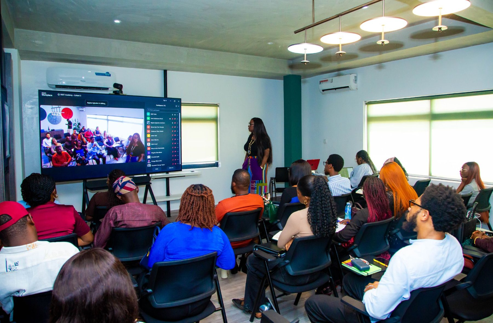
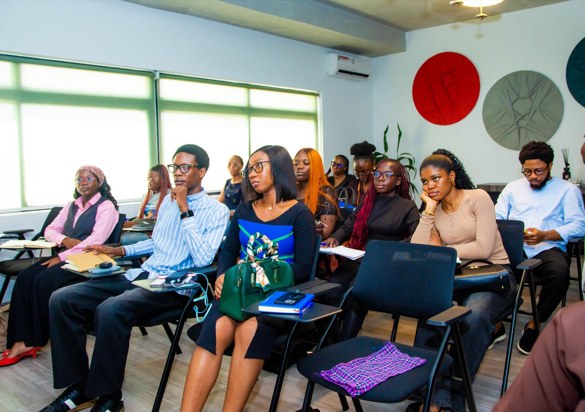
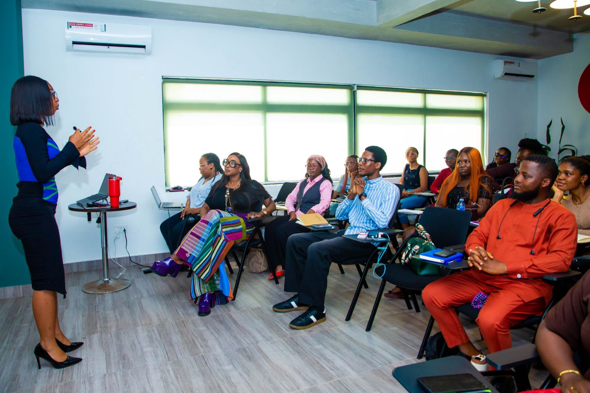
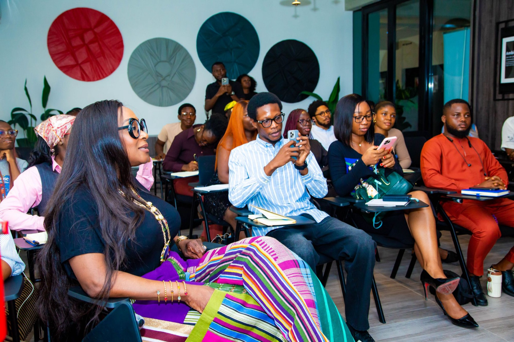
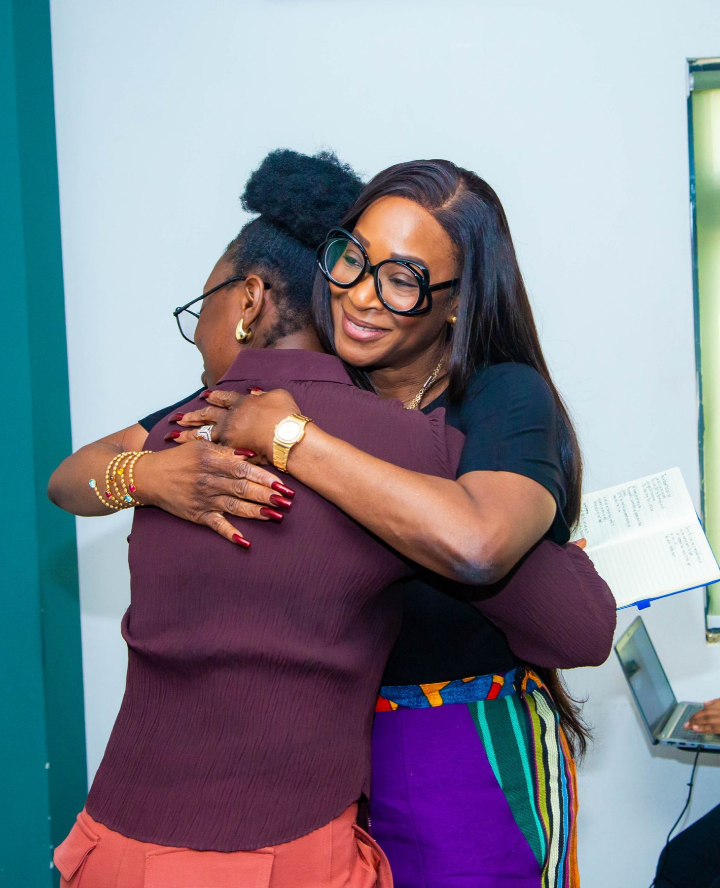

SKOT Impact Academy
Build a strong foundation in PR and communications.
Apply for the next cohort
About the programme
SKOT Impact Academy is SKOT Communications’ CSR initiative, created to nurture the next generation of storytellers. We invest in people with the passion and potential to make a difference through communications.
Who it’s for
Early-career communications professionals with 1–2 years of experience in business, communications or a related field, in-house or agency (NYSC completion).
What you’ll learn
The PR Foundation Course.
Tailored for early-career professionals (1–2 years’ experience) seeking foundational and industry-relevant skills. This flagship free 6-week course demonstrates our dedication to nurturing talent from the ground up and fostering a more inclusive industry, providing practical, real-world training expertise.
- 01
Introduction to marketing, advertising, PR, digital media and branding
- 02
PR strategy, messaging and stakeholder management
- 03
Storytelling and content for different audiences
- 04
Media relations and digital media
- 05
PR campaigns and crisis management
- 06
Reputation management, personal branding and presentation skills
- 07
Group exercise and team presentation
- Apply for the next cohort
How you’ll learn
Practical, shared and led by practitioners.

01
Practical exercises
Build strategies and analyse real campaigns.

02
Peer learning
Guided group discussions with fellow early-career professionals.

03
Interactive workshops
Led by industry practitioners, with role-play, scenario planning and live feedback.
Inside the Academy
Learning. Leading. Growing.



